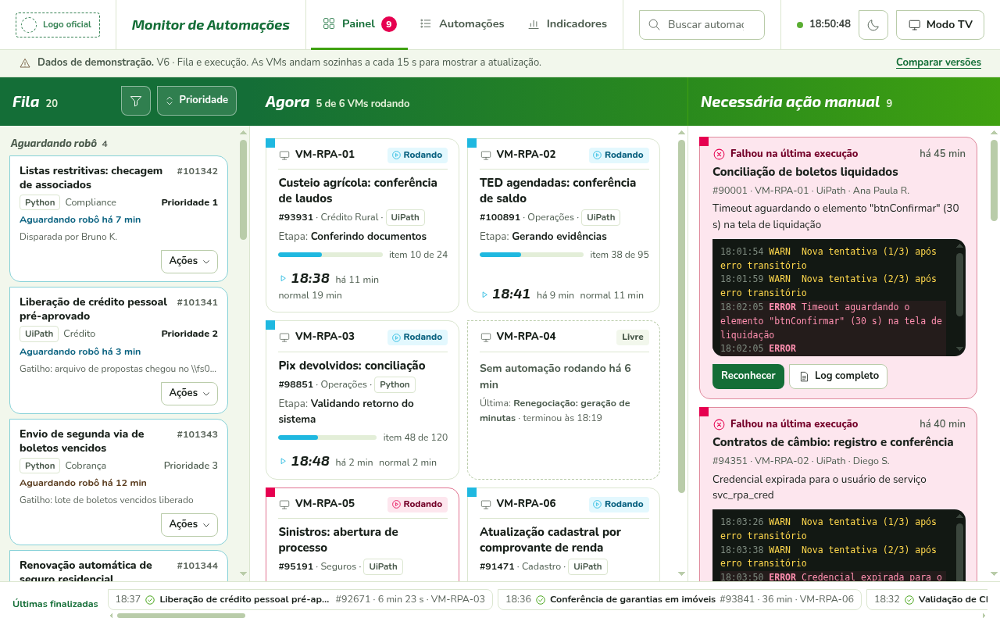
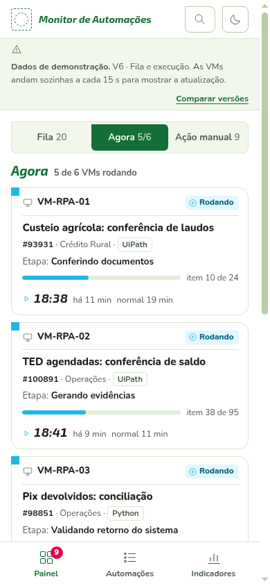

V6 · Fila e execução do rascunho do time · tema claro e escuro
A organização desenhada pelo time, com o visual da V1 no tema claro e o da V4 no escuro. O botão de sol/lua no topo troca; cada pessoa fica com a sua escolha.
- Organização
- Três colunas: Fila (com ações em quem aguarda robô: assumir, ignorar, atender agora, agendar, comentar), Agora (as 6 VMs fixas, cada uma com o que roda nela) e Necessária ação manual (com o trecho do log). As últimas finalizadas ficam num rodapé discreto. Abas: Painel, Automações (lista e detalhe, execuções que abrem) e Indicadores (com resumos executivos).
- Do manual
- Claro: box verde em degradê, Exo 2 itálico e o canto reto como bandeira de estado. Escuro: o mesmo layout, e falhas e atrasos “acendem”.
- Ponto de atenção
- Prioridade, número da execução e etapa precisam vir do Orchestrator e dos logs Python. Ainda não sabemos se todos os robôs informam a etapa. As ações na fila mexem no Orchestrator e precisam de permissão e auditoria.